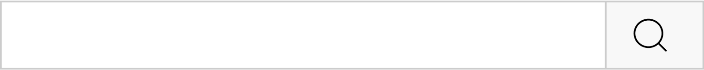

Semana Font- end| Dia 01: Construindo uma Landing Page no Mundo Invertido Com HTML e CSS

83,3 mil inscritos
2 mil
Não gostei
compartilhar
Download
DigitallnnovationOne
2,1 mil visualizações
Transmitido há 2 dias

DigitallnnovationOne 1,6 mil visualizações Transmitido há 3 dias
DigitallnnovationOne 1,7 mil visualizações Transmitido há 4 dias

DigitallnnovationOne 2,1 mil visualizações Transmitido há 2 dias

DigitallnnovationOne 2,1 mil visualizações Transmitido há 2 dias
DigitallnnovationOne 2,1 mil visualizações Transmitido há 2 dias
DigitallnnovationOne 2,1 mil visualizações Transmitido há 2 dias
DigitallnnovationOne 2,1 mil visualizações Transmitido há 2 dias
DigitallnnovationOne 2,1 mil visualizações Transmitido há 2 dias
28.418 visualizações Transmitido ao vivo em 23 ago. de 2022
Inicie uma aventura imersiva no mundo do Font-end Com HTML e CSS. Para isso, criaremos uma Landing page com a temática da série Stranger Things, a qual contará com a implementação de um theme switcher (light e dark) para explorarmos os mistérios do mundo invertido.